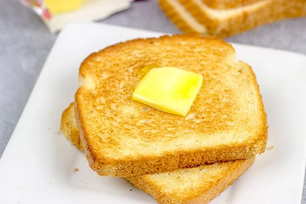

Toast

Description
Ever wondered how to make a hearty slice of toasted bread? Look no further! By the end of this, you'll be able to scorch bread with the best of 'em.
Ingredients
- 2 slices of bread (any kind)
- Butter (any kind)
Steps
- Lay out your two slices of bread.
- Take out a butter knife and spread some butter (as desired) across both sides of the bread.
- Put the slices in the fryiing pan, medium heat.
- Flip once toasted.
- Remove from frying pan once both sides are toasted.
- Pat yourself on the back for a job well done.